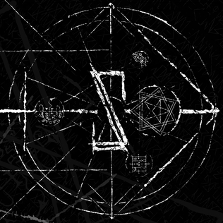
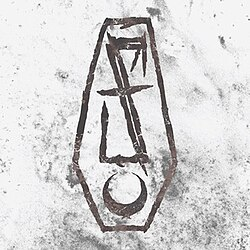
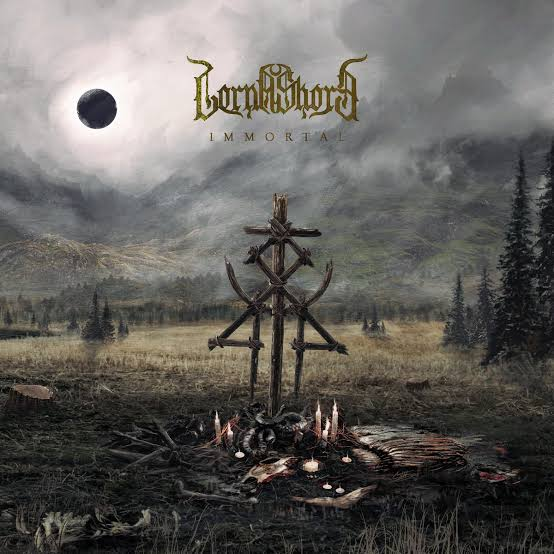
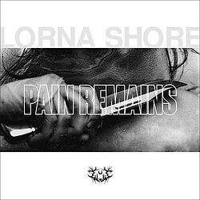
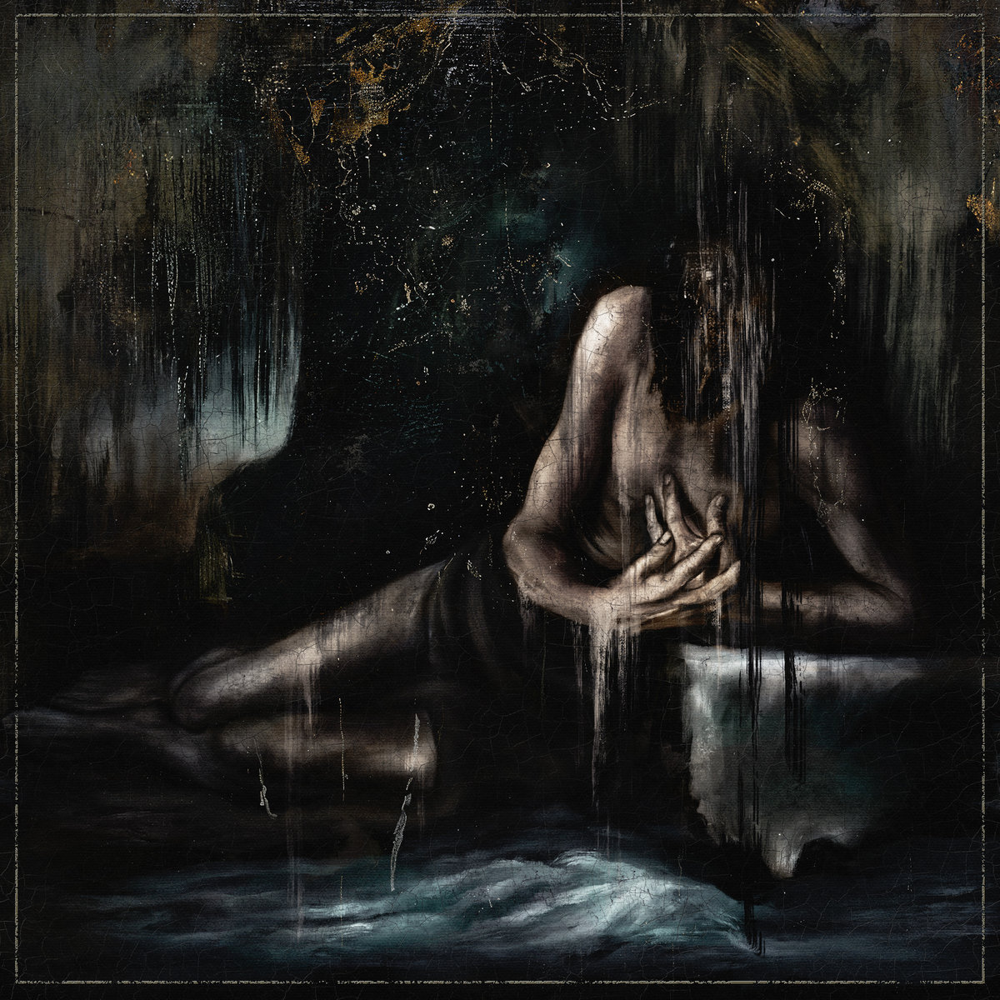

This is the singer Will Ramos onstage.
About
Lorna Shore is an American deathcore band from New Jersey, formed in 2009. Their sound combines heavy breakdowns and growled vocals with orchestral and symphonic elements. They’re known for songs like “To the Hellfire” and the album Pain Remains.
Members
My Top 5 Songs

2015

2017

2020

2022

2025
Click the record to stop it.
My favorite album is Pain Remains because I love its intense sound and emotional atmosphere.